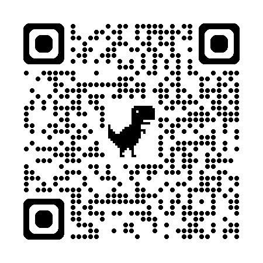

2004
Nasce o Facebook
Mark Zuckerberg e colegas lançam o Facebook, inicialmente voltado a estudantes universitários.
A Meta desenvolve plataformas e tecnologias que ajudam pessoas a se comunicar, compartilhar ideias, encontrar comunidades e divulgar negócios. Neste site, exploramos como essas ferramentas fazem parte do cotidiano — e quais desafios acompanham seu uso.
Comunicação · Conteúdo · Comunidade
A empresa surgiu com o Facebook e ampliou sua atuação ao integrar diferentes serviços de comunicação, redes sociais e tecnologias imersivas.
Mark Zuckerberg e colegas lançam o Facebook, inicialmente voltado a estudantes universitários.
O Facebook anuncia a aquisição do Instagram, uma plataforma de compartilhamento de fotos.
A empresa anuncia a aquisição do WhatsApp e da Oculus, ampliando sua atuação em mensagens e realidade virtual.
Facebook, Inc. passa a se chamar Meta Platforms, destacando a atuação em tecnologias sociais e experiências imersivas.
A inteligência artificial ganha espaço em recursos de criação, assistência e descoberta de conteúdos.
Os marcos resumem acontecimentos selecionados; consulte as fontes oficiais ao final para mais detalhes.
Esses serviços têm funções diferentes, mas todos podem apoiar formas de comunicação e interação digital.
Rede social para publicar e descobrir fotos, vídeos, Stories e Reels. Exemplo: uma loja mostra seus produtos em vídeos curtos.
Aplicativo de mensagens e chamadas. Exemplo: um pequeno negócio responde dúvidas, combina pedidos e informa horários.
Assistente de inteligência artificial disponível em experiências da Meta. Exemplo: ajudar a elaborar ideias ou responder perguntas, com revisão humana das respostas.
Um algoritmo é um conjunto de instruções para realizar uma tarefa. Em uma rede social, sistemas de recomendação ajudam a selecionar e ordenar publicações que podem interessar a cada pessoa.
Sistemas podem considerar sinais como contas seguidas, temas vistos, curtidas, comentários e tempo de visualização. A combinação de sinais varia conforme o serviço e não é totalmente representada por uma única regra.
Uma recomendação organiza conteúdos que podem ser relevantes. Uma publicidade é uma mensagem comercial identificada como anúncio. Os dois podem aparecer em plataformas digitais, mas têm finalidades diferentes.
As tecnologias digitais oferecem oportunidades, mas seus resultados dependem de como são desenvolvidas e utilizadas.
Facilitam a comunicação a distância, ajudam comunidades a se organizar e oferecem ferramentas de divulgação para negócios.
É importante entender como dados são usados, revisar permissões e verificar informações antes de compartilhá-las.
Ver conteúdos semelhantes repetidamente pode limitar a variedade de perspectivas. O uso excessivo também pode afetar a rotina; pausas e escolhas conscientes ajudam.
Escolha interesses como comida, games e cinema. Observe como as escolhas alteram as publicações exibidas e descubra, na prática, a ideia de recomendação de conteúdo.
Ou acesse pelo QR Code:

A regra do simulador é simplificada e foi criada para fins educativos. Use apenas escolhas e publicações fictícias.
Projeto desenvolvido por estudantes do CAMPS para a Tech CAMPS.
Integrantes: Giovanna Ferreira • João Pedro • Heitor Terrabuio • Nicolas da Silva • Maytê Godoy
Consulte as páginas abaixo para conhecer a empresa e verificar os marcos históricos citados.
Acesso em: 22 out. 2026.